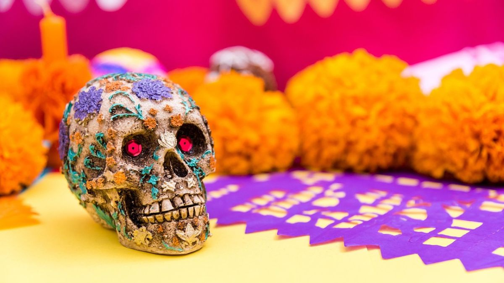
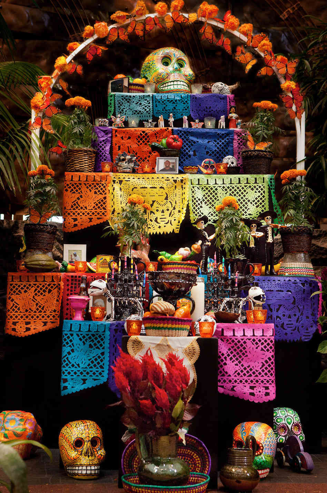

El Día de Muertos es una de las tradiciones más representativas de México. Es una festividad en la que se honra y se recuerda a los seres queridos que ya fallecieron.Más que un día de luto, es una celebración llena de color, música y comida, donde las familias se reúnen para recibir simbólicamente a las almas de sus difuntos. Se cree que durante los días 1 y 2 de noviembre, las almas de los niños y los adultos regresan del más allá para convivir con sus familias.Para recibirlos, se colocan ofrendas o altares en las casas y cementerios, decorados con flores, velas, fotografías y sus platillos favoritos. Es una mezcla de tradiciones indígenas y católicas que fue declarada Patrimonio Cultural Inmaterial de la Humanidad por la UNESCO..

Velas y veladoras: Se colocan para guiar a las almas con su luz en el camino de regreso. · Flor de Cempasúchil: Su color naranja y su aroma marcan el sendero que deben seguir los difuntos. · Pan de muerto: Es el alimento tradicional, generalmente espolvoreado con azúcar y con formas que representan huesos. · Fotos de los difuntos: Se colocan retratos de los seres queridos para recordarlos y honrarlos. · Comida y bebida favorita: Se les ofrece lo que más les gustaba en vida para que disfruten de su visita. · Copal e incienso: Se utiliza para purificar el ambiente y alejar los malos espíritus. · Papel picado: Decora el altar y representa el viento y la fragilidad de la vida. · Agua: Se coloca un vaso de agua para calmar la sed de las almas después de su largo viaje. · Sal: Sirve para purificar y conservar el cuerpo de los difuntos durante su estancia. · Objetos personales: Se incluyen cosas que pertenecieron al difunto para que se sienta como en casa.
